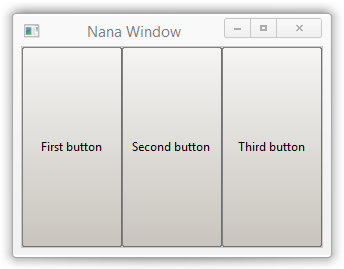
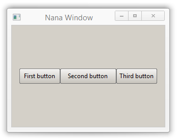

Class nana::place
The class nana::place is used to automatically manage the layout of child widgets inside their parent window, according to a user-defined set of rules. To achieve that, a place object must be associated with a widget that is the parent of other widgets (such as a nana::form or a nana::panel), and a set of layout rules must be defined as a string, using a notation similar to a markup language. That allows the place object to automatically position and size the child widgets within the parent window, whenever the parent window is resized.
The string that defines the layout rules is refered to as the "div text", and is set by calling place::div. Essentially, the div text divides the associated window into multiple distinct areas refered to as "fields", and defines how these fields relate to each other in terms of size and position. For a detailed description of the div text format and related concepts, see this wiki article.
After the div text is set, widgets can be assigned to specific fields, which causes the place object to automatically position and size each widget to occupy the space of the associated field. Not every field must have a widget assigned to it; "empty" fields are often used as spacers. For details, be sure to read the "Usage details and examples" section at the bottom of this page.
place::field_interface
The abstract class place::field_interface represents a field, and defines an interface for assigning widgets to fields, comprised of two methods (fasten and operator<<).
After a widget has been assigned to a field, that widget's window is automatically sized and positioned to occupy the space of the field. Much of the time, there's no reason to assign more than one widget to a given field, but it's possible to do so if necessary (sometimes it may be useful to do so). What happens in such a case depends on which method is used to assign the widgets.
If operator<< is used to assign multiple widgets to the same field, the widgets all share the space of the field, being grouped adjacent to each other in a pattern that can be controlled by a few relevant field attributes (arrange, grid, and gap). In this case, the place object makes the widgets visible whenever place::collocate is called, counteracting any prior call to widget::hide.
If fasten is used to assign multiple widgets to the same field, the widgets overlap each other, each widget occupying the entire field. Only the widget at the top of the z-order is visible, occluding all the others (the z-order is the same as the order in which the widgets are created). The widgets being overlapped is useful, because any one of them can be made visible at any time, by simply hiding all the others with widget::hide. This technique can be used with several nana::panel widgets to create a wizard-like interface.
| fasten | assigns a widget to a field | |
This method is one of the two ways to assign a widget to a field, as discussed above. Parameters
Return valueA reference to ExceptionsAn exception of type ExampleThe following example shows how |
||
| operator<< | assigns a widget to a field | |
This method (bitshift operator) is one of the two ways to assign a widget to a field, as discussed above. Parameters
Return valueA reference to ExceptionsAn exception of type ExampleThe following example shows how |
place::error
The class place::error (derived from std::invalid_argument) is the type of most exceptions thrown by the methods of classes nana::place and place::field_interface.
| Data member | Type | Description |
|---|---|---|
| base_what | std::string | the error string |
| owner_caption | std::string | the caption of the widget that the place object is bound to |
| div_text | std::string | the div text |
| field | std::string | the name of the field where the error occured (if applicable) |
| pos | std::string::size_type | position in the div text where the error ocurred (npos when not applicable) |
Member functions
| (constructors) | construct a nana::place instance |
|||||||
Parameters
|
||||||||
| bind | associates this object with a given parent widget | |||||||
This method designates the specified widget as the widget whose children this object manages the layout of. Parameters
|
||||||||
| collocate | immediately applies the layout rules | |||||||
As mentioned in the introduction to the class, the layout rules are automatically enacted whenever the window of the associated parent widget is resized. However, there is also a need for the layout rules to be enacted on demand, just after changes are made to the layout (to avoid the child widgets' positions and dimensions being out of date until the parent window is resized). This method fulfils that need, immediately repositioning and resizing the child widgets to reflect the current layout. |
||||||||
| window_handle | returns the window handle of the associated widget | |||||||
Return valueThe window handle of the widget whose children this object currently manages the layout of. |
||||||||
| Field access | ||||||||
|---|---|---|---|---|---|---|---|---|
| field / operator[] | access a specified field | |||||||
Both Parameters
Return valueA reference to the internal object that represents the requested field, which is of a type derived from the abstract class place::field_interface. ExceptionsAn exception of type |
||||||||
| field_display | sets or gets the display state of a field | |||||||
This method allows a field to be temporarily removed from the layout (meaning the field no longer occupies space in the layout, and any widgets belonging to it are no longer visible). After changing the display state of a field, place::collocate should be called, otherwise the change to the layout will not be applied until the associated window is resized. Parameters
Return value(1) ExceptionsAn exception of type |
||||||||
| field_visible | sets or gets the visibility of the widgets in a field | |||||||
This method allows a field to temporarily stop showing the widget(s) assigned to it. The field continues to occupy space in the layout (the layout is not affected, the field simply behaves as if it's empty). Parameters
Return value(1) ExceptionsAn exception of type |
||||||||
| Dockable field | ||||||||
| dock | registers a factory that produces widget objects for a dockable field | |||||||
This method registers a factory that produces widget objects for the specified dockable field (the factory is stored and associated with the provided name). For info about dockable fields, see the relevant section of the wiki article about the div text. For an example of how to use either overload of this method, see the dockable field example in the "Usage details" section at the bottom of this page. Parameters
Return valueA reference to ExceptionsAn exception of type |
||||||||
| dock_create | invokes a registered widget factory, creating the parent dockable window as needed | |||||||
This method calls a factory previously registered via Parameters
Return valueA pointer to the widget produced by the factory. ExceptionsAn exception of type |
||||||||
| Modifiers | ||||||||
| div | sets or gets the text that defines the layout rules | |||||||
Parameters
Return value(1) the current div text Exceptions(0) an exception of type |
||||||||
| erase | removes a widget from the field it is assigned to | |||||||
This method removes a widget from the field it is assigned to. The field continues to occupy space in the layout, and the widget is still visible, but the Parameters
|
||||||||
| modify | modifies the definition of a field inside the div text | |||||||
This method changes the definition of a specified field (the section of the div text that defines the field is changed). As with all actions that change to the layout, place::collocate should be called after modifying a field, otherwise any change to widgets' sizes and positions will not be effectuated until their parent window is resized. Parameters
ExceptionsAn exception of type |
||||||||
| splitter_renderer | sets a custom renderer for the splitter bar | |||||||
This method sets a function object that renders the splitter bar (the bar does not have any default renderer, so it is invisible if the user does not set a renderer). Parameters
ExampleThe following example sets a function object that renders a grey splitter bar two pixels wide: |
Usage details and examples
This section is meant to be complementary to Jinhao's wiki article about the div text format, which should be regarded as the main documentation resource for the div text.
Dockable field example
The following example defines two dockable fields in the window of a nana::form widget, and attaches a nana::button widget to each field. It should be noted that the dockable window that is created when place::dock_create is called, is given the caption of the widget created by the factory. Thus, the widgets created by the factory are constructed with the caption desired for the dockable window, and their own desired caption is set afterwards by calling widget::caption.
#include <nana/gui.hpp>
#include <nana/gui/widgets/button.hpp>
int main()
{
nana::form fm;
nana::place plc {fm};
// define two dockable fields aligned vertically, with a 15px spacer field between them
plc.div("margin=15 vert <dock <btn1>> <weight=15> <dock <btn2>>");
auto btn_factory = [&](nana::window w)
{
// the argument received by the nana::window parameter is the handle of
// the dockable window that must be the parent of the widgets produced by
// this factory, so this handle must be passed on to the widget constructor
return std::make_unique<nana::button>(w, "dockpane 2");
};
plc.dock<nana::button>("btn1", "internal factory", std::string {"dockpane 1"});
nana::button &btn1 {*reinterpret_cast<nana::button*>(plc.dock_create("internal factory"))};
btn1.caption("created by nana::place internal factory");
plc.dock("btn2", "my factory", btn_factory);
nana::button &btn2 {*reinterpret_cast<nana::button*>(plc.dock_create("my factory"))};
btn2.caption("created by `btn_factory`");
plc.collocate();
fm.show();
nana::exec();
}Fields and how they relate to each other
As explained in the introduction to the class, a field is an area of a window that can display a widget (when one is assigned to it). But how are the position and dimensions of a field controlled, exactly?
The first thing to understand is that the layout model used by the place class is a hierarchical structure of fields (parent fields containing child fields). At the top of the hierarchy lies an implicit root field that fills the entire window. Thus, the fields that the user defines in the div text are children or descendants of the implicit root field. The layout is essentially a tree-like structure of fields, with the fields that terminate branches acting as recipients for widgets. Technically, it's possible to assign widgets to fields that have children, but doing so is not useful or recommended (so as a rule, only assign widgets to childless fields).
When it comes to field dimensions (width and height), the relevant principle is that a field occupies as much of the space of its parent as possible, within the limits of a few restrictive factors. These factors can be the field's own weight attribute, the weight of sibling fields, the alignment of the siblings (vertical / horizontal), or a combination thereof.
The dimension that the weight attribute controls depends of the type of alignment that the parent field uses for its children. By default, sibling fields are aligned horizontally, but if the parent field is defined with the vert attribute, then they are aligned vertically. So the weight of a field controls its width when the parent uses a horizontal alignment, and its height when the parent uses a vertical alignment. The dimension that isn't controlled by the weight of a field, is controlled by the weight of its parent.
Consider the following example:
#include <nana/gui.hpp>
#include <nana/gui/widgets/button.hpp>
int main()
{
nana::form fm;
nana::place plc {fm}; // the nana::place object `plc` is associated with the nana::form widget `fm`
plc.div("<first> <second> <third>"); // define three horizontally adjacent fields
// buttons are created with zero size
nana::button btn1 {fm, "First button"};
plc["first"] << btn1; // assign the widget `btn1` to the field named "first"
nana::button btn2 {fm, "Second button"};
plc["second"] << btn2;
nana::button btn3 {fm, "Third button"};
plc["third"] << btn3;
// enact the layout rules before starting the form's event processing loop,
// otherwise the buttons have zero size until the form is resized
plc.collocate();
fm.show();
nana::exec();
}The parent of the three fields defined in the div text is the implicit root field, which uses the default (horizontal) alignment for its child fields, so the result is three fields aligned horizontally:
Since none of the fields has a weight attribute explicitly defined, the only factors that determine each field's dimensions are the space occupied by the siblings, and the orientation of their alignment (horizontal or vertical). Since the alignment is horizontal, the fields share the width of the parent field (which fills the entire nana::form window), and match its height.
Generally speaking, sibling fields with undefined weight equally share whatever space remains after the siblings with defined weight are considered, and since in this case none of the fields has a weight attribute defined, the entire width of the parent field is shared equally among all the fields.
It's also worth noting that since none of the fields has an absolute weight value, they all stretch or contract accordingly when the parent root field is resized (which happens when the nana::form window is resized).
The position of a field inside its parent depends on one thing: the weight of the previous sibling field. If the previous sibling has a fixed weight, then the field has a fixed position. Otherwise, the previous sibling "pushes" the field, causing it to move when the parent is resized. To show that, let's change the div text of the previous example to give the first and third fields a fixed width (80 pixels):
plc.div("<first weight=80> <second> <third weight=80>");After this change, the first and third fields each take up 80 pixels of the parent's width, and the second field fills the remaining space. This has the effect of the second field "pushing" the third field to the right side of the parent field, sticking it to that side.
Since the three sibling fields are aligned horizontally, their weight controls their width, and their parent's weight controls their height. And since their parent field is the implicit root field (which fills the entire window), the siblings are as tall as the window. To make them have a fixed height (let's say 30 pixels), they must be given a new parent that has a 30 pixel height:
plc.div("vert <row_btn weight=30 <first weight=80> <second> <third weight=80>>");The three fields holding the buttons now have a new parent field named row_btn, that has a fixed weight of 30 pixels. In turn, the field row_btn is nested inside an unnamed parent field that has the vert attribute, causing its children to have a vertical alignment (which is why the weight of field row_btn defines its height). Note that the vert attribute here doesn't apply to the root field, but rather to a new unnamed user-defined field that is implicitly started (the first child of the root field can be defined without angle brackets).
The children of a parent field are arranged from left to right by default, or from top to bottom if the parent field has the vert attribute. Thus, the field row_btn is placed at the top of the area occupied by its parent.
In order to place row_btn further down, a new sibling field must be inserted before it. Once that's done, the weight of the new sibling will determine the amount of downward displacement that row_btn experiences. If the new sibling field has no weight defined, it will occupy all the space that remains after row_btn is considered, pushing row_btn all the way down:
So what would happen if a new sibling field of undefined weight is inserted after row_btn? As mentioned earlier, sibling fields with undefined weight equally share whatever space remains after the siblings with defined weight are considered. In this case, the result is that row_btn becomes centered vertically in the parent field:
To summarize the points discussed in this section:
- the layout is a hierarchy of fields (parents containing children), with an implicit root field at the top that covers the entire window
- sibling fields are arranged from left to right inside their parent when horizontally aligned, or from top to bottom when vertically aligned
- sibling fields with undefined
weightequally share whatever space remains after the siblings with definedweightare considered - the
weightof sibling fields controls their width when horizontally aligned, or their height when vertically aligned - the dimension not controlled by a field's own
weightattribute is controlled by theweightof the parent field - widgets should only be assigned to childless fields
Field spacing, managing a large div text
The previous section focused on the relationships between fields (how they affect each other's dimensions and positions), so the example it used didn't space out the fields, causing the widgets to be "stuck" to each other. That may not be desirable in an actual interface, so this section will show how to introduce spacing between fields.
The obvious way to introduce spacing, is to use the margin attribute. This attribute behaves like the CSS property padding, in the sense that it introduces space inside the field rather than around it, as a result squeezing the content of the field into a smaller size. In other words, the introduced space pushes the the content of the field inward (widgets or child fields), rather than pushing the surrounding fields outward. Let's add a 15 pixel margin to the outermost field in the example from the previous section:
plc.div("vert margin=15 <> <row_btn weight=30 <first weight=80> <second> <third weight=80>> <>");The result is a 15 pixel-wide inner band of empty space introduced along the boundary of the field, which pushes the child fields inward:
The margin attribute could also be used to introduce space between the sibling fields holding the buttons, but it wouldn't be practical to do so. The space introduced via margin would take away from the space available to the widgets, squeezing them into a smaller size, and creating the need to artificially inflate the weight of the fields in order to compensate. For example, in order for the first button to be 80 pixels wide while having a 15 pixel right margin, the weight of its field would have to be 95 (80+15).
A much simpler way to introduce space between two fields that hold widgets, is to introduce an empty sibling field between them, and give it a fixed weight equal to the amount of space desired:
plc.div("vert margin=15 <> <row_btn weight=30 <first weight=80> <weight=15> <second> <weight=15> <third weight=80>> <>");That is much more straight-forward, but now a new problem becomes evident: the longer the div text becomes, the harder it is to read. To mitigate this problem, the div text can be split into multiple lines:
plc.div(
"vert margin=15"
"<>"
"<row_btn weight=30"
"<first weight=80> <weight=15> <second> <weight=15> <third weight=80>"
">"
"<>"
);Or alternatively, the following works best after setting the text editor to highlight the string escape character with a low contrast color:
plc.div("\
vert margin=15\
<>\
<row_btn weight=30\
<first weight=80> <weight=15> <second> <weight=15> <third weight=80>\
>\
<>\
");Also, the div text can be made less complex by eliminating the children of field row_btn, and assigning the button widgets directly to row_btn. This requires the use of attributes arrange and gap:
#include <nana/gui.hpp>
#include <nana/gui/widgets/button.hpp>
int main()
{
nana::form fm;
nana::place plc {fm}; // the nana::place object `plc` is associated with the nana::form widget `fm`
plc.div("\
vert margin=15\
<>\
<row_btn weight=30 arrange=[80,variable,80] gap=15>\
<>\
");
// buttons are created with zero size
nana::button btn1 {fm, "First button"}, btn2 {fm, "Second button"}, btn3 {fm, "Third button"};
plc["row_btn"] << btn1 << btn2 << btn3;
// enact the layout rules before starting the form's event processing loop,
// otherwise the buttons have zero size until the form is resized
plc.collocate();
fm.show();
nana::exec();
}One disadvantage of putting all the buttons into a single field, is that it eliminates the possibility of giving the second button a minimum width using the min attribute (for example min=80).
And finally, if the div text gets really big, it may be time to break up the layout into smaller sections using nana::panel, and possibly nana::group.